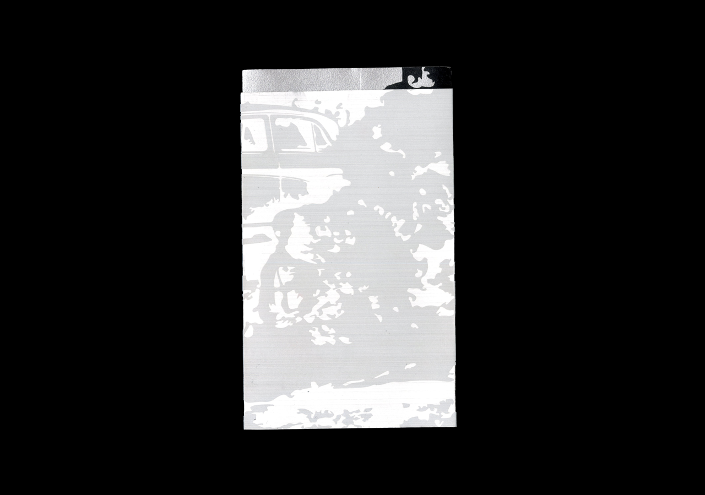
Duplicate
제본: 사철
판형: 105mm × 183mm
쪽수: 96p
종이
겉표지: 메탈팩보드 300g AS 40
속표지: 스타드림 실버 110g
내지: 타블로 76g
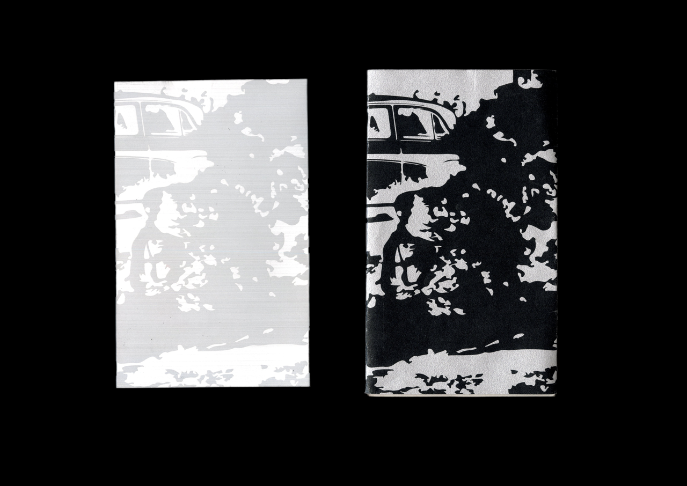
겉표지와 속표지 중 무언가가 복제되었을 것이다.
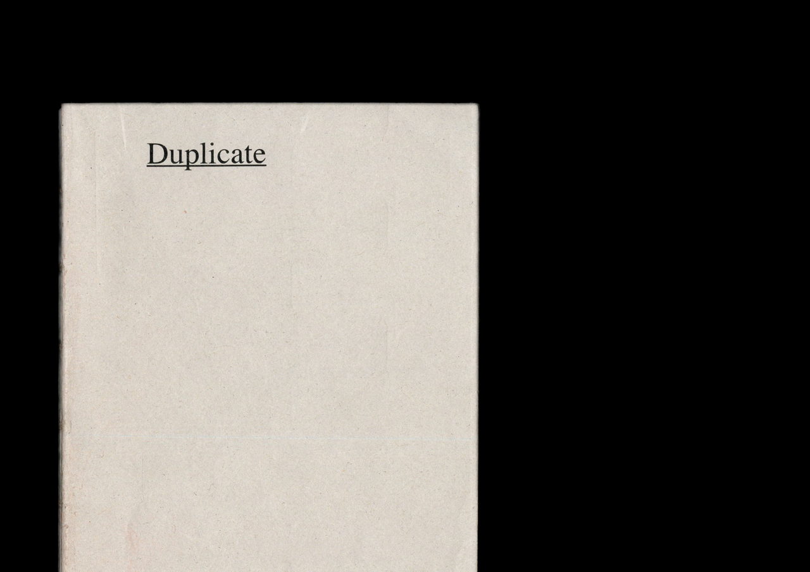
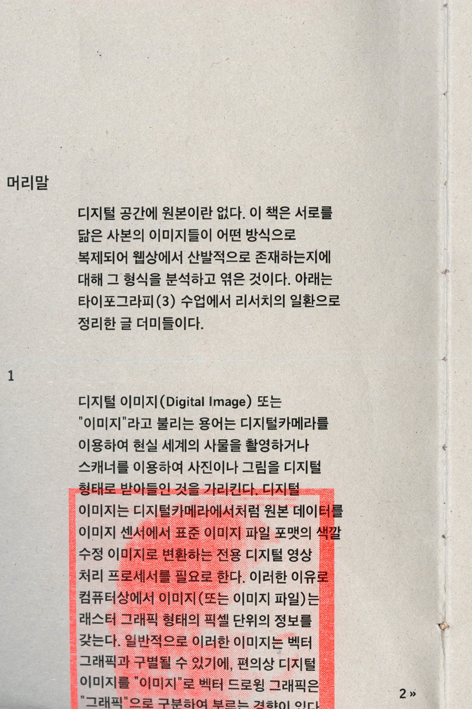
프실 9번 예약 이슈,,,
디지털 공간에서 텍스트를 복제했을 때 발생하는 불편한 현상들
서체 크기 변화
강제 줄바꿈/줄안바꿈
특정 언어의 글리프 대체
등등
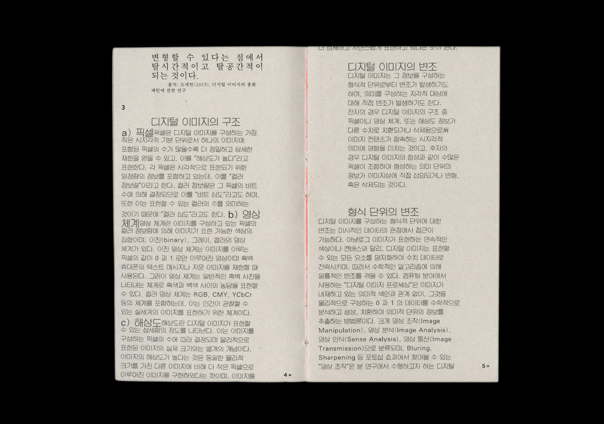
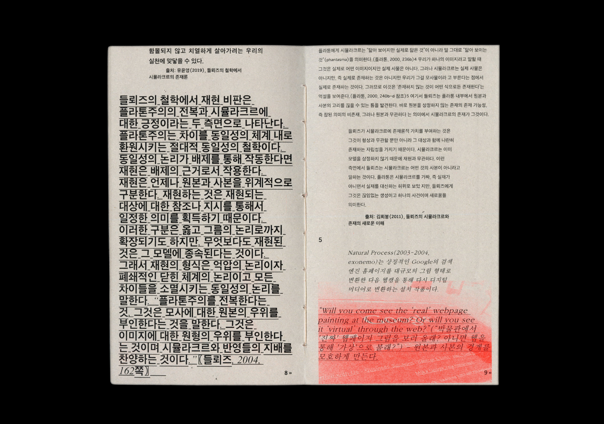
서식 실험
머리말 활자명세(서체, 크기, 행간, 정렬)
1
하이츠-Helvetica, 9pt, 14pt, 왼끝맞춤
*본문과 같음
2
SM3신명조, 9pt, 14pt, 왼끝맞춤
SM3신명조, 13pt, 14pt, 양끝맞춤
*라틴 글리프로 깨짐 효과
3
SM세나루, 9pt/14pt, 14pt, 왼끝맞춤
*제목과 본문의 줄바꿈 깨짐 효과
4
하이츠-Helvetica, 9pt, 14pt, 양끝맞춤
하이츠-Helvetica, 16pt, 18pt, 왼끝맞춤 (밑줄)
하이츠-Helvetica, 7pt. 14pt, 왼끝맞춤
5
SM3신명조, 9pt, 14pt, 왼끝맞춤 (15도 기울임)
SM3신명조, 12pt, 14pt, 왼끝맞춤 (15도 기울임)
6
SM3견출명조, 9pt, 14pt, 왼끝맞춤
출처
-, 7pt, 9pt, 왼끝맞춤
선언
하이츠-Esimene, 48pt, 62pt, 양끝맞춤
(라틴 서체가 본문과 동떨어져 보여서 수정하고 싶었지만 리소를 3주에 걸쳐 찍다보니 수정할 수 없는 상태가 되었다.ㅠㅠ)
본문 활자 명세(서체, 크기, 행간, 정렬)
하이츠-Helvetica, 9pt, 14pt, 왼끝맞춤
복사 붙여넣기 하고
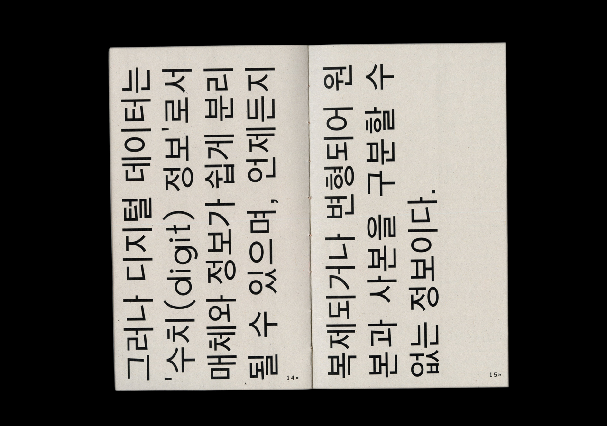
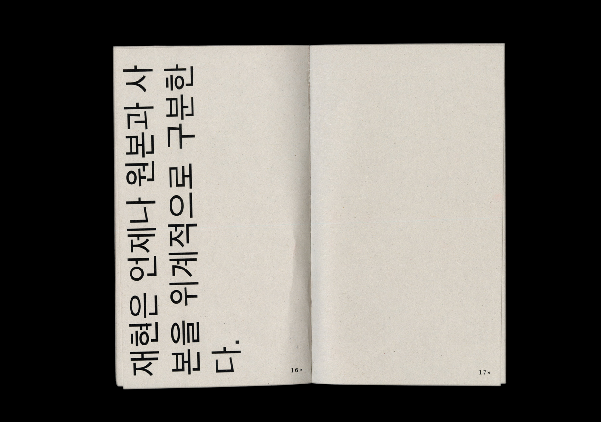
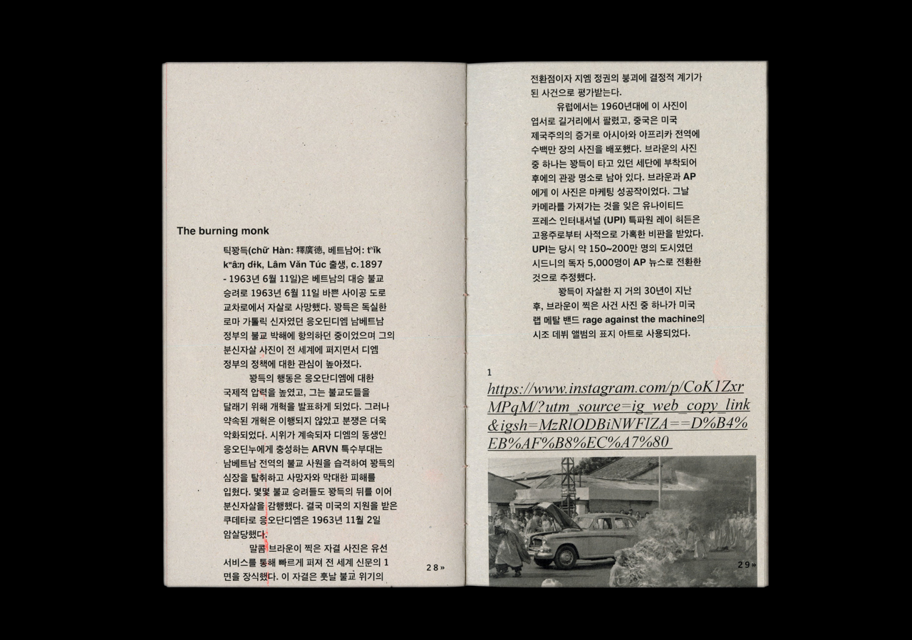
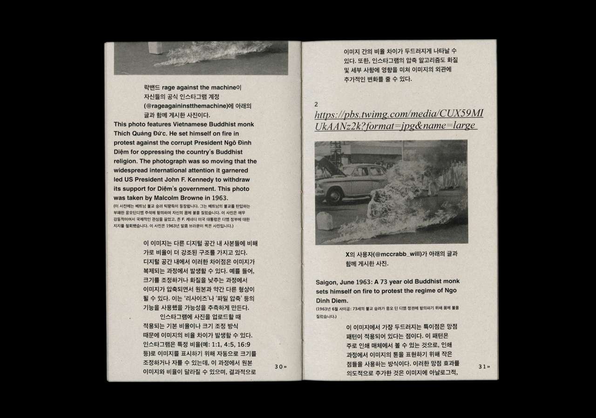
메모들
-상하 여백 좁게, 스크롤 되는 것 같이. 웹을 닮게 조판하기.
-사진 정보를 이미지 링크 그대로 길게 쓰기, 하이퍼링크 서식을 먹여서. 웹에서 텍스트를 읽는 것 같이 만드는 요소.
-좌우 여백 크게 남기기. 스크롤의 인상, 본문의 앞과 뒷 공간을 운용.
-블로그 글 긁어왔을 때 생기는 출처:… 포인트로 사용하기.
-이미지 드래그 했을 때 생기는 Invert 효과.
-페이지 번호는 웹의 페이지 쪽수 표기 따라가기.
-이미지 비율에 따라 차지하는 공간이 다른 반응형 느낌처럼… 가로 비율 이미지 -> 6단 차지, 세로 비율 이미지 -> 4단 차지
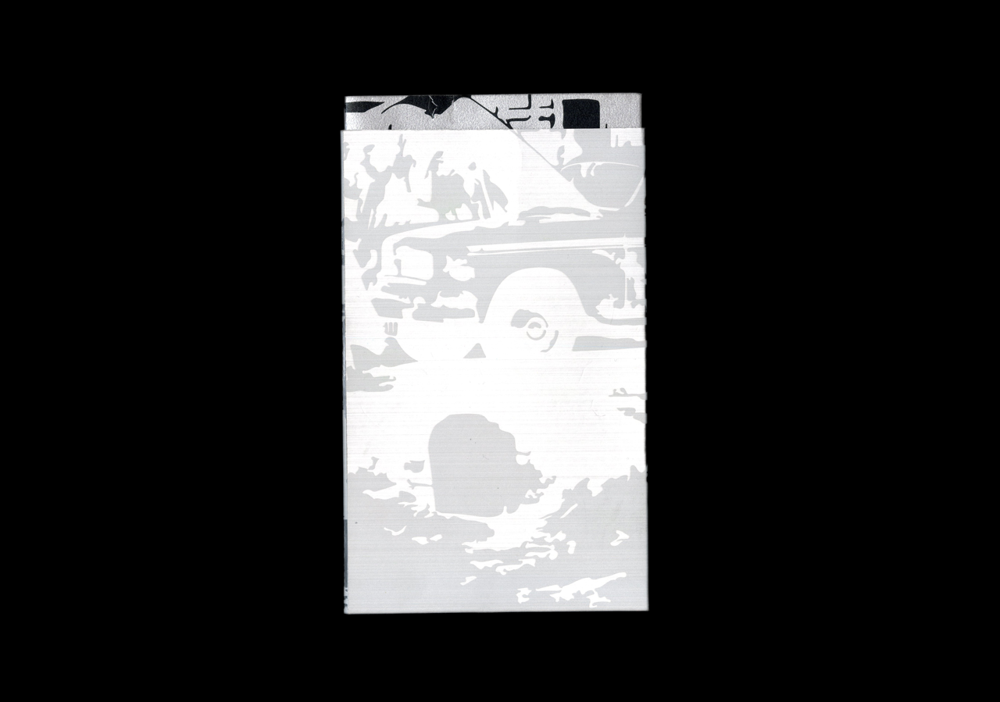
{kind=link}
{kind=link}